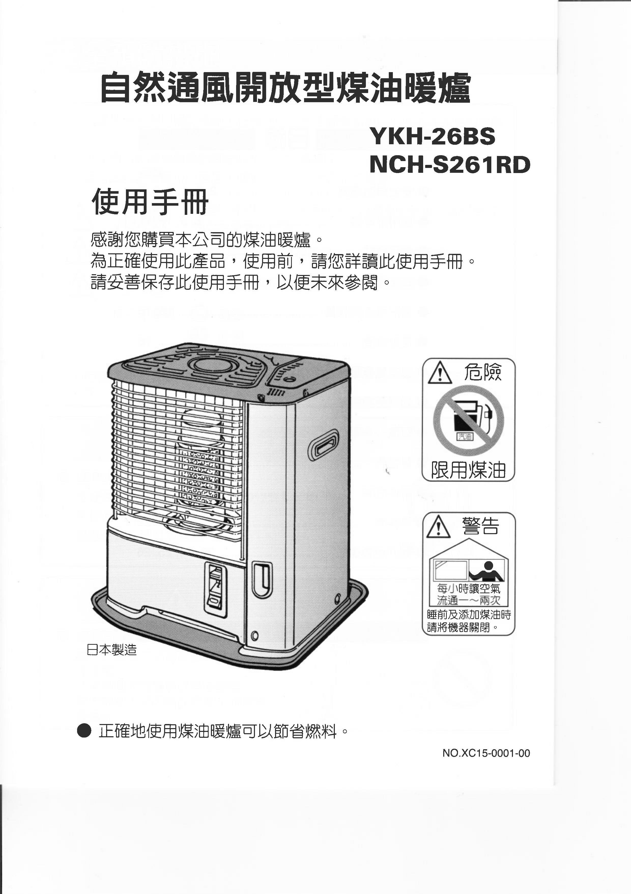

5. 用 Copyfish OCR，適合網路圖片的文字辨識需求
最後，補充一個「特殊需求」，如果你要辨識的文字不是來自紙張照片，而是來自「網頁上的照片」時，可以試試看這篇教學：「Copyfish 驚奇 Chrome 套件複製圖片影片內中文字！」提到的 Copyfish 。
他可以快速偵測網頁中的照片內文字，並轉成可用的數位文字，對中文 OCR 的辨識效果也不錯喔！
有了上述五種工具，各種辦公室需要的無紙化情境就能迎刃而解了，而如果你還推薦其他中文 OCR 軟體，歡迎一起留言討論。
延伸閱讀相關文章：
Google Drive 雲端 PDF 編輯轉檔簽名傳真完全攻略
行動文書如何鍵步如飛？13種 Android 編輯神器 App
[年度精選]比軟體更強悍 33 種文書繪圖免費線上工具
本文授權轉載自：電腦玩物
